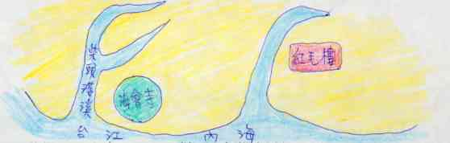
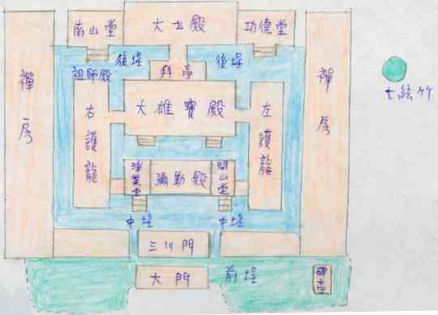
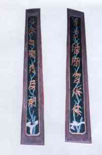

地點：台南市北園街89號
級數：第2級古蹟
學號：821131
姓名：許雅茹
題名：開元寺
關鍵字：台南市 開元寺 寺廟建築 古蹟 佛教
地點：台南市北園街89號
級數：第2級古蹟
開元寺，是目前台南市規模最大的佛寺，也是台灣最早創立的官方寺院，在
台灣佛教界享有極為特殊的地位。
原名「北園別館」的開元寺，創建於明永曆年間，原是鄭經在台灣的行館和
安養母親董氏之所。到清康熙29年(1690)，才改建為全島最大的佛教寺院。
300於年來，雖迭經修建，在主體的建築形制上，卻仍保有典型佛寺的「伽
藍格局」，在台灣的佛寺中殊屬少見，十分難得。
除建築特色外，開元寺還保存許多明鄭時期的遺物，是研究鄭氏家族的重要
史料。其他如銅鐘、佛像、匾聯、雕刻等文物，加上民俗畫大師蔡草如的豐美彩
繪:走一趟開元寺，有如享受了一番兼貝歷史、藝術與宗教之美的旅行，豐碩而
甘醇。
開元寺的三川門、彌勒殿和大雄寶殿三棟建築，是目前台南市規模最大的二
級古蹟，現在，特別就歷史、空間、建築及神明等角度，分別來認識開元寺的精
髓所在。
壹、歷史背景
開元寺最早是鄭經設在台灣的庭園別墅，間做其母晚年安居的處所。
清領後，才將別墅改為佛寺，屬於佛教禪宗臨濟宗支派。
別館的創建:明永曆年間，鄭經在金門、廈門沿海戰敗，退守台灣。一時間
抑鬱失志，無心政事，就在當時郡制之北的洲仔尾一地，築園造庭，作為「承天
府行台」，也就是在台灣的別館。
據說，園內極為敞闊華麗，峻宇雕牆、修竹茂林，加上曲折有致的小橋樓台，
堪稱全台庭園之冠。鄭經從此流連園中，鎮日酗酒，縱歌逸樂，直至積鬱而卒。
其母董氏後亦終老於此。
改別館為佛寺:清康熙29年(1690)，當時的台灣鎮總兵王化行及台廈道
王效宗，因見北園別館遼闊幽寂，竹林蒼鬱，是所謂「三寶地」，極適興築寺宇;
而台灣當時沒有大型的佛寺古剎，於是決定改別館為佛寺，以彰顯大清盛世。修
竣後，取名「海會寺」，又稱「開元寺」;第一任住持為志中禪師。
到了乾隆42年(1777)，台灣知府蔣元樞加以大規模修建，增築各殿、妝
塑雕像，定下從山門、彌勒殿、大雄寶殿到大士殿的中軸建築規制及左右廂房等。
修後冠稱「開元寺」，並留有碑圖、文說明。
嘉慶元年(1796)，為慶祝皇帝登基，遂取「聖天子緩靖海疆至意」，更
名「海靖寺」。鎮總兵哈當阿並題三匾:「三寶殿」 「彈指優曇」 「不二法
門」等，至今仍高掛殿堂之上。
日治時期:1895年台灣割日，寺內惡僧寶山與日人勾結，幸好出賣前夕該
僧嘔血身亡，開元寺才得以保存下來。後來，經第六任住持玄精上人發願重修，
以德啟眾，懲惡勸善，宗教風氣漸盛，開元寺舊觀也得以恢復。
光復後:民國47年，政府實行「耕者有其田」政策，開元寺因土地生產不
足繳稅再度陷入危機。後經眼淨禪師與台南各界仕紳名流合議處理，才化險為夷。
此後，廟宇陸續添建修整，並創辦佛學院、幼稚園、慈愛醫院等，朝多元化
發展。目前列為二級古蹟的開元寺，扮演的不只是僧侶靜修與佛教信仰的單純寺
院角色，而是一座與台南市民的日常生活關係至為密切的綜合性機構。
二、地理位置
開元寺原叫「海會寺」，即因其位在海、溪會流處而得名。如下圖，海會寺
就位於柴頭港溪匯入台江內海的附近，從這裡可直通煙波浩瀚的台江海域，搭船
可達安平港。另外，從陸路上看，海會寺距離那時的赤崁樓(圖中的紅毛樓)只
約五里，可說兼具了水陸交通之便。

三、格局
開元寺的佈局穩重大方，恢宏寬闊，是台灣少見的格局完整的大型佛寺，相
當可貴。
開元寺的殿堂配置屬四合院式。除晚近興建的大門以外，東西中軸線內的主
要建築，從外到內來看，依序是三川門(山門)、彌勒殿、大雄寶殿、大士殿;
這種層次和排列方式，和大陸許多較具規模的大佛寺十分相似。因為，開元寺的
歷代住持，大都和大陸關係密切，有的來自大陸寺院，有的曾到大陸習法受戒，
與大陸佛寺淵源至深，因此，台灣開元寺的建築形式也非常明顯的受到大陸佛教
名剎的影響。
中軸線內的主建築和兩側廂房間，原有圍牆相隔，以區分莊嚴的神明殿堂和
僧眾的起居空間。目前圍牆已拆除，僅留彌勒殿和大雄寶殿間的空磚矮牆，作為
象徵性的區分。
開元寺整體格局的另一特色是，接近禪寺建築所謂的「伽藍七堂」規制。擁
有山門(三川門)、前殿(彌勒殿)、主殿(大雄寶殿)、南北配殿(左右廂房)、
鐘鼓樓和法堂(以主殿兼用)
不論就空間尺度或建築配置來看，開元寺在在顯示出宏敞遼闊、舒朗流暢的
泱泱大寺風範，值得輕步流連，細細品味。

四、建築特色
開元寺是由庭園別墅改建而成的佛寺，鄭經當年華麗的雕牆畫宇，今已不可
見。取而代之的是樸素典雅、平實穩重的典型清代佛寺建築。
屋頂形式:三棟古蹟建築的屋頂都是簡潔的「三川脊」式。沒有太多的繁複
裝飾，素潔而莊嚴，具有佛教的寧和氣氛，和一般混合民間信仰的廟宇屋脊形式
大不相同。
彩繪:寺內各殿的重要作品，幾乎全出自大師蔡草如之手。從三川門、彌勒
殿、大雄寶殿到祖師殿，無一不豐美細緻，匠心獨具。
木雕:簷下樑間的木作，工巧精美，十分可觀。尤其三川門前的門扇與木窗
透雕，題材非常豐富，包含花鳥、龍鳳與各種吉祥圖案，美不勝收，的確值得一
一細看。
五、神明儀典
開元寺是純粹的佛教寺院，各殿所供奉的神明，符合傳統佛教的規制。
主殿即大雄寶殿，神像極多，主要供奉釋迦牟尼，左右兩側陪侍文殊、普賢
二菩薩;這三尊佛像，據說是台灣最早雕塑的佛像，十分尊貴。另外，兩旁還配
祀有十八羅漢和其他菩薩數尊。
三川門內供有唏將和哈將兩護衛神，這是清朝佛寺的流行作法，在其他寺廟
很少見到。
彌勒殿內除中央供奉彌勒佛外，兩邊分別有「風調雨順」四大天王。三川門
和彌勒殿內的神像都十分巨大威赫，仰望時，敬畏之感油然而生。最後一進的大
士殿則主祀觀音菩薩。
寺內最重要的法會是每年農曆四月八日的釋迦聖誕法會和二月十九日的觀
音聖誕法會。此外，每月初一、十五和年節時也都舉行紀念法會。
介紹完開元寺的特色後，接著我們就一一介紹各定點特色。
在廟埕看三川門
尋訪開元寺，會先在北園街上看到一座色彩斑斕的大門，這是民國48年才
加建的。(圖一)
大門前極為寧靜，寺內古樹出牆，寺牆旁有一、二小販和命相攤，陣陣徐緩
清風吹來，讓人未進寺內，便隱約領略到靜修佛地的清寧。
古樹庭園:穿過大門，進入綠蔭蔽天的前埕。最先感受到的是空氣中那般清
絕靜謐的氣氛，彷彿能叫人把一切塵囂繁瑣，完全棄之門外，淨新禮佛。(圖二)
三川門正前方有兩棟菩提樹，象徵正覺;另有老榕、樟樹十餘株，株株蒼翠
蓊鬱。站在中央步道上，看著三川門紅瓦與古樹垂蔭，構成一幅即為幽深典雅的
景象。
碑亭:立著石碑數通，大多是以往修建時留下來的，上面記錄著歷代的興修
沿革，是瞭解開元寺歷史的珍貴文物。(圖三)
屋頂形式:三川門的屋脊是「三川脊式」，三層相連，中央一層抬高。紅瓦
片、白飛簷，舒暢的平脊配合上揚的燕尾，展現出氣宇非凡的寺廟風采。因為是
純粹的佛教寺院，屋頂裝是十分簡樸，正脊上只有舍利塔和雙龍，沒有其他華美
繽紛的剪黏簷飾。(圖四、圖五)
三川門前
順著長長的步道，走近三川門，在外側新大門未建之前，這裡才是開元寺傳
統的正式出入口。因古時候佛教的寺院大都建在山間叢林內，所以進出的大門又
叫「山門」。三川門因地位顯著重要，因此從門楣、廊牆、門窗到柱石，無一不
精湛可觀。故一一詳細解說這些作品。
門神:開元寺的門神彩繪名聞遐邇，是名師蔡草如的重要代表作品，享有極
高的藝術評價。仔細凝看，不難發現其造型極為生動，栩栩如生;尤且面貌與姿
態，自然流露出一股英挺動人的氣勢。和一般佛教寺院一樣，門神為常見的「左
右護法」和「四大天王」。左邊的韋馱，膚色粉白，神韻溫厚，眼睛細長而柔美;
手持金剛杵，是佛教的護法神。右邊的伽藍，則形貌威猛，膚色黝黑，雙眼圓睜;
骨骼和手勢的勁道十足，是佛寺的守護神。邊門的四大天王，分別手持劍、琵琶、
傘與蛇，代表風、調、雨、順。(圖六)
抱鼓石:末在正門兩側，形狀像鼓。主要作用是穩定門柱和裝飾門面。鼓面
上有螺旋紋，外側和基座上刻著鶴、馬等動物圖案。造型十分簡拙，是初建時流
傳至今。(圖七)
中央門扇:中央門扇因位置顯著，是視覺的重點，因此，許多雕刻的精品佳
構都在這裡出現。
最上段是花鳥圖案的透雕，中段則為「夔龍拱罄」。夔龍又叫褵虎，是形體
如龍的單腳怪獸，這裡以雙龍迴繞著古樂器「罄」，代表吉慶;周圍另有象徵
「天官賜福」的四隻蝙蝠。最下面的裙板刻有麒麟和犀角杯，麒麟是仁獸，代表
正義和文明;犀角杯則是佛教寶物。(圖八)
門楣:門楣上的彩繪是「草如仙」的精心傑作。大門上額有四幅，兩側邊門
上各有一幅;分別畫述佛經故事。畫面意境超遠然，用色簡單優雅，筆觸十分順
暢靈活，可說是廟宇彩繪的上選之作，值得佇足細賞。此外，彎枋牌樓上的花草
雲紋透雕，也極精緻可觀。(圖九)
員光與吊筒:抬頭往上看，樑柱間一排排的雕花板，就是「員光」。上面刻
有象徵「喜上眉梢」的梅花喜鵲及其他花鳥、人物故事等;外側還有雕刻成蓮花
做形狀的「吊筒」。(圖十)
對聯:兩側邊門和側窗上，分別有竹葉體、篆書、隸書三種不同字體的對聯，
是嘉慶年間重修後所題。書法優美，含意深遠。
邊門以竹葉狀筆畫書寫而成的竹葉體對聯，是目前僅存的台灣著名貢生林朝
英遺墨，字底並飾以綠色竹葉圖案。左窗篆書對聯「開闢真機細縕無滯，元泉妙
道色相俱空」，右窗隸書對聯「開化十方壹瓶壹缽，元機參透無我無人」。以「開」、
「元」二字為首，巧妙的道出寺名與佛道禪境。(圖十一)
石枕:兩側邊門門柱下各有一對，也是穩固門柱用的。左邊這對正面有像鶴
的鳥類浮雕;右邊一對的造型比較特別，半圓的額頭，凸出的巨眼大鼻，看起來
十分威凜兇暴，似人又似鬼。(圖十二)
柱:不是一般廟宇雕造精美的龍柱，而是樸素的圓柱。中央四根為木石柱，
即上段1/3為木柱，下段2/3為石柱;其他都是木柱。柱珠上有花雲紋和小圓珠
石刻，十分細緻精巧，是清朝修建時所作。(圖十三)
窗櫺:特色是以方形的窗櫺來包含圓形的構圖，代表「天圓地方」。左右兩
邊博古圖內容豐富，身含寓意旨趣。左邊的圖案涵意為「新韶如意、平安吉祥」;
圖上的梅花、如意代表新年如意，花瓶和靈芝代表平安吉祥。四個角落裡有蝙蝠
和雲氣，象徵福運連連。(圖十四)
廊牆:上段內側是龍虎堵，左面為龍，右面為虎。外側的彩繪，左右兩側分
別是「船師悔責」和「醜女改容」的世尊傳說故事。用色清美，筆法細膩，圖上
並書有故事內容，不妨在此品文觀圖一番。(圖十五、圖十六)
三川門內
首先走進三川門內，會被左右兩尊碩大無比的神像所震懾。再一抬頭，一
候條淡黃屋板和大紅橫楹，加上琳瑯滿目的木作彩繪;小小的空間裡，使人同時
感受到威巨和清朗兩種截然不同的氣氛。門內中央並懸掛著「開元寺」、「小西
天」兩匾，分別是光緒和日治時代信徒所獻。
唏哈二將:台灣寺廟很少在三川門兩側設護衛神像，唯有清朝所建的佛寺才
有此作法，如台南開元寺、彌陀寺等。
唏哈二將，強勇富正義感，是佛的侍衛兼護法之神。綠臉棕眉的是唏將，褐
臉黑眉的是哈將，據說分別是印度的那羅廷天界力士和密遮金剛力士。兩者都採
坐姿，微開口笑，手持金剛杵，姿態靈巧而活潑。此二神像可能是清朝原物，大
約二十年前才修護過。(圖十七、圖十八)
木雕彩繪:架棟間的大木作、小木雕都極精緻可觀;額板和楹樑上的象、竹、
花、鳥彩繪，清麗與繁複間而有之;與三川門外的風格吻合，同是蔡草如的佳構。
(圖十九)
中埕
站在三川門內，往彌勒殿望去，恰可覽盡彌勒殿建築形制之美與中埕靈巧流
暢的空間感。彌勒殿整體建築十分潔淨素雅;平直的屋脊，成一字形鋪展開來，
只有脊尾部份，稍微向上飛揚，線條非常謙淨而柔美。比三川門更具佛教清穆氣
氛。(圖二十)
彌勒殿
彌勒殿又稱「天王殿」，是入三川門後的第一座大殿。正殿供奉彌勒佛和四
大天王，左右偏殿分別是「開山堂」和「淨業堂」。殿內碑記、神像、匾聯無一
不深具歷史意義，並傳達高度的宗教理念，值得靜心品賞。
正殿前廊右側牆上，有乾隆43年的「恩憲大人蔣捐買園業碑記」，乃當時
為感念蔣元樞等人捐獻、重修海會寺而立。
匾聯:大門正中有綠底藍字的「彈指優曇」匾，是嘉慶元年哈當阿重修時所
題。門前數幅對聯，聯文圓融樂天，叫人看了不禁會心一笑。前廊中柱是「我笑
有因真可笑、你忙無甚為誰忙」，邊門兩側為「大肚能容了卻人間多少事，滿腔
歡喜笑開天下古今愁」，大門上則為「寬懷大肚包藏色相、巨眼圓睛降服邪魔」，
在在傳達出達觀寬懷的宗教思想理念。(圖二十一、圖二十二)
彌勒佛:中央供奉袒胸露肚、笑容滿面的彌勒佛主神。彌勒是佛教的菩薩，
梵文意思為親切慈愛，擁有慈悲與無敵兩大特色。
相傳，彌勒佛又叫「布袋和尚」，因中國五代時，浙江奉化縣有個瘋和尚，
自稱是彌勒化身轉世，經常拿著布袋，到處行乞，行動瘋癲，詔無倫次，大家都
稱他為「布袋和尚」。他去世後，信徒就依他肥胖、嘻笑的造型，塑像膜拜，傳
沿至今。(圖二十三)
四大天王:兩側的「天王踩惡鬼」塑像，四大天王個個巨大威赫，氣勢迫人;
腳下的惡鬼表情有悲戚、有哀嚎，十分生動逼真。(圖二十四、圖二十五、圖二十六)
大雄寶殿
大雄寶殿是全寺最重要的殿堂，白色的門牆，配合磚紅屋頂，特別顯得光潔
明亮。
正殿內神像眾多，除主祀佛教創始者釋迦牟尼外，另祀多尊菩薩、尊者和十
八羅漢。正中央的釋迦牟尼和文殊、普賢菩薩三神像年代久遠，彌足珍貴。
此外，殿內還存有全台最早的銅鐘。簷下樑間的木雕彩繪，造型巧妙，用色
華美，充分展現出結構與色彩的魅力。
憨番扛廟角:進大雄寶殿之前，抬頭往上看，前簷樑間有兩尊男子，側身弓
腿，以手臂奮力抬著廟角大樑，就是俗稱的「憨番扛廟角」或「憨番舉大杉」
關於它的由來有不同的傳說:一說憨番取自荷據時期的黑奴，因其粗壯有
力，所以匠師在新建廟宇時，習慣將他們雕塑在廟角，以發揮支撐的作用。另一
說，此種作法乃模仿自印度的寺廟，因當地無論佛教或印度教的廟宇，都可發現
這樣的建築形式。(圖二十七)
釋迦牟尼:是佛教的開山鼻祖，地位極崇高，大雄寶殿的「大雄」二字，即
因尊仰其無邊的道德法力而名。據傳，釋迦在2500多年前出生於印度，他的父
親是迦毗羅衛城城主。自小生活十分悠遊，不知人間疾苦。直到某日出遊，看到
生、老、病、死等人間的愁苦與無奈，頓時了悟萬事變幻無常，遂決意捨棄貴族
生活，出家修行。經過數年苦修後，終於在菩提樹下悟道成佛。(圖二十八)
文殊、普賢菩薩:陪侍在釋迦牟尼左右，在佛教的地位十分崇高，並稱「華
嚴三聖」。
釋迦左側，駕馭獅子的是文殊菩薩，左手持著金色淨盤，右手作迤灑狀;智
慧在眾菩薩中號稱第一。右側的普賢，騎著白象，首握藍色書卷，在佛教中，主
司理法。(圖二十八)
銅鐘:據說是全台最早鑄成的銅鐘，至今已有300多年的歷史。由第一任住
持志中禪師閉關3年，勸募所得製造而成，完成於康熙34年。
鐘高70公分，直徑105,7公分，重1600斤。鐘上銘記著志中禪師的出關偈
----「獨坐釘關給善緣，募鐘立願利人天;一聲擊出無邊界，同種功德億萬年」，
同時還鐫有「般若波羅蜜多心經」全文和捐造者名單，幾乎當時在台的文武高官
如台灣鎮總兵王化行、台廈道高拱乾、知府吳國柱等都名列其上。
鐘齡雖逾300年，鐘面上的文字卻依舊清晰可見，字跡俊美，線飾古樸，是
鑄鐘的極品，台灣少見的珍物。(圖二十九)
拜亭
拜亭:又稱「後軒亭」，原是供信徒擺置祭品、燒香參拜的空間。樑上的木
雕精湛巧妙，左右兩側的彎月形雕花板上，分別刻有「龍吐蓮花」、「雙龍拱罄」、
「鰲吐浪花」等吉祥圖案。仔細看，刀法極為靈動活躍。
大紅楹上的「惠濟蒼生」匾額旁有佛手柑、仙桃、石榴等造型的木雕，寓意
「三多」------多福、多壽、多子。樑上彩繪則以花鳥為主，黃綠色調配以紅花
點綴，顯得非常細膩清美。(圖三十)
甕瓦矮牆:大雄寶殿與大士殿之間的庭園兩側，各有一排由酒甕堆疊排列而
成的矮牆，據說是清朝遺物。小口圓肚的造型，顯得非常古拙親切，甕與甕間形
成的曲線柔美而和諧。(圖三十一)
山牆:山牆，是指建築物的側牆，其形式和作法可以有很多變化。這裡接近
所謂的「火形」造型，是閩浙一帶常見的形式，最大特色是山牆高過屋頂本身，
遇到火災時，能有效阻擋火勢蔓延，舉隔絕火舌的功能。 (圖三十二)
大士殿
開元寺的最後一進，是大士殿，主祀觀音大士。民國52年，全面翻新，改
建成2層樓的中西合璧建築。
大士殿:樓下中央是正殿，牆上嵌有十餘個龍、鳳、鯉魚等造型的崔替，據
說是原來舊殿所有，改建時特地保留下來的。2樓中央主祀千手觀音，並附設「慧
光圖書館」，創辦於民國66年，收藏諸多佛學書籍，開放給一般民眾借閱。(圖三十三、圖三十四)
2樓簷廊的門楣上有「不二法門」匾額，是清朝鎮總兵哈當阿重修時所題。
簷下四個吊筒，十分特殊而富創意，分別是手握蓮花、佛經、寶劍和金剛杵的造
型，在台灣佛寺中很少見到此種以經卷法器為吊筒的作法。(圖三十五、圖三十六、
圖三十七、圖三十八、圖三十九)
南山堂:為紀念佛教南山律宗的創始人道宣而設，開元寺雖屬禪宗的臨濟宗
支派，但對律宗依然尊崇有加。
功德堂:堂內有古井一口，據傳是明永曆年間開鑿的，因鄭經起居用水智取
自此，故稱「鄭經井」。井前方的玻璃櫃內有一隻白色大海螺化石，是當年鑿井
時所掘出的，螺紋清晰可讀，被尊為鎮寺之寶。井的四周還保存有鄭成功當年的
瓶、壺等器物，壁上則有鄭成功像和海戰圖數幀。
七絃竹
七絃竹和「鄭經井」齊名，都具有特殊的歷史意義。相傳，鄭經的母親董氏，
素來鍾愛修竹，居於「北園別館」時，特地從河南臥龍岡，飄洋過海，移植竹中
異品---七絃竹來台種植，迄今逾300年，依然生氣蓬勃，欣欣向榮。
台灣竹的種類相當多，有箭竹、刺竹、墨竹、綠竹、白竹等，屬於少數珍貴
的品種之一。它的特徵是莖幹極為細長，略呈黃綠色，上面有7條青色的絲紋，
看來就像琴的絃線，因此得名;竹貌娉婷秀美，動人萬分。(圖四十)
護龍
左側護龍:斜頂平房的日式建築風格，為1933年所修建的，整體的素木風
貌，呈現出有別於其他殿堂的雍容素雅格調。
木質的格窗門扇，仔細看，每一處木框上都經過用心的琢磨，展現出精巧細
膩的花、鳥、竹、獸雕刻，兩側長長的木刻對聯，營造出莊寧靜穆的氣氛，形成
一種罕有的獷雅兼具的趣味。(圖四十一)

▲<圖十一>左側邊門竹葉體對聯：
「寺古僧閒雲作伴，山深世隔月為朋。」

▲<圖二十二>匾聯—「大肚能容了解人間多少事，
滿腔歡喜笑開天下古今愁」